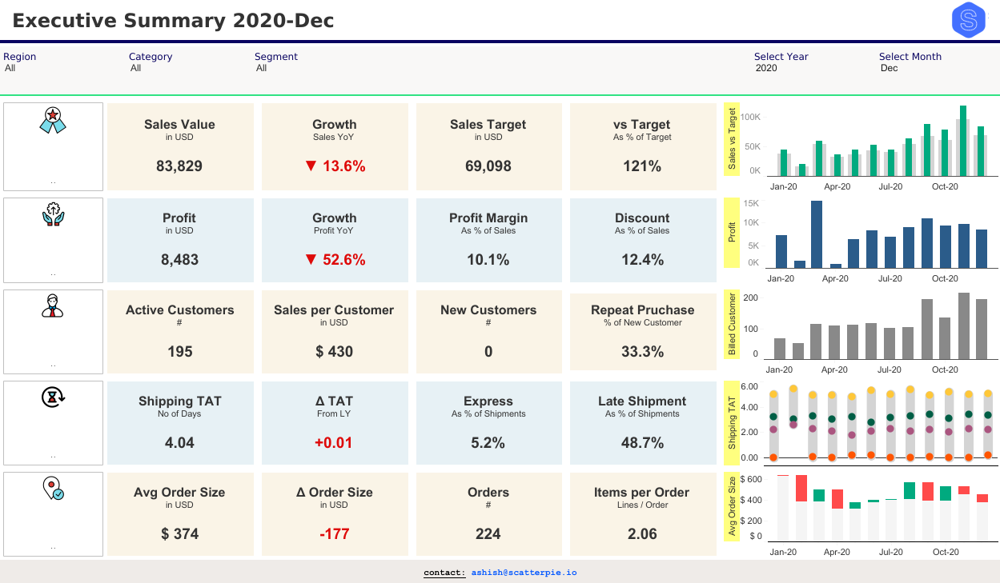
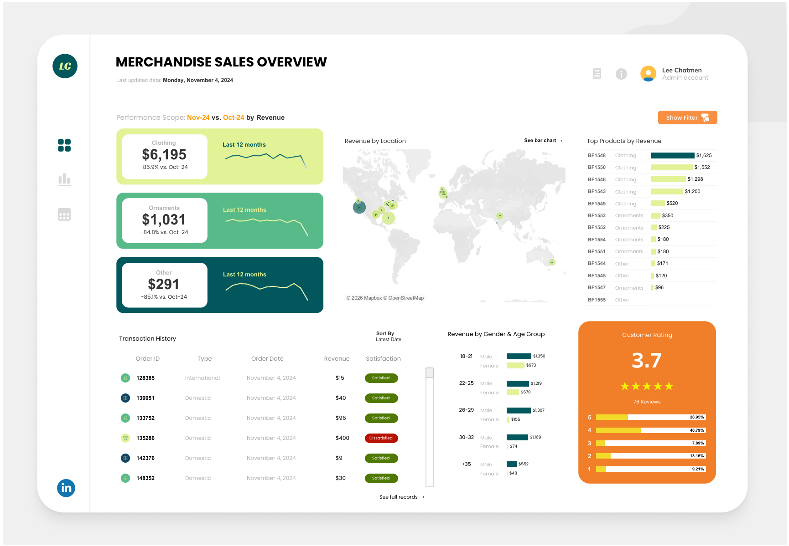

dashboard-101:
Prinsip dan Praktik Terbaik Pengembangan Dashboard di Dunia Industri
PhD Candidate in Public Health,
Infectious & Tropical Diseases Epidemiology Lab, Monash University Indonesia
Sat, 9 May 2026
Agenda
60 Menit — Presentasi
- 🎯 Opening: Dashboard Baik vs. Buruk
- 📐 Fondasi: Apa & Mengapa Dashboard
- 🎨 Best Practice Desain
- 🛠️ Ekosistem Tools
- 🌐 Temukan Data Anda: Public APIs
20 Menit — Demo
- 🌦️ SEAWeather Live Demo
- 🔍 Di Balik Layar: Arsitektur
- 🎮 Hands-On: Coba Sendiri
- 📋 Checklist & Takeaway
Dashboard mana yang membantu kamu mengambil keputusan dengan lebih cepat?


Dashboard ini membantu pengguna dengan cara:
- Headline utama (misal Korea Utara): CO₂ per kapita 11,6 ton, turun dibandingkan tahun 2019; CO₂ per PDB 0,3 ton, juga sedikit turun.
- Faktor pemicu: Grafik “Emisi dari Energi” menunjukkan batu bara dengan porsi terbesar
- Tindakan: Mengalihkan sumber energi ke yang lebih bersih, seperti tenaga surya atau angin
- Metrik utama: Penjualan $746 ribu dan Laba $96 ribu, keduanya naik dibandingkan tahun sebelumnya
- Detail mendalam: Grafik “Sub-Category” menunjukkan Kursi dan Ponsel mengalami pertumbuhan terbesar
- Tindakan: Re-order produk terlaris, obral/promosi rak buku yang penjualannya menurun
Mengapa Dashboard Penting?
“Dashboard berada di antara pertanyaan dan keputusan
Ketika fiturnya berjalan dengan baik, tim menjawab ‘Apa yang berubah?’ dalam hitungan detik dan melanjutkan analisis atau pekerjaan
Saat tidak berfungsi, mereka akan mencari dan menebak”
Data → Keputusan: tanpa dashboard, berapa lama?
collect → clean → model → transform → encode (visualise)
Pipeline ini adalah inti dari setiap data product — dashboard berada di ujung “encode”.
Apa itu Dashboard?
Dashboard = Alat Komunikasi, Bukan Sekadar Tampilan Data
Tiga fungsi utama:
- 📢Menyampaikan pesan: satu perspektif yang sama
- ❓Menjawab pertanyaan penting: yang sering ditanya, terjawab otomatis
- ⚡Mendukung pengambilan keputusan: dari “Fitur apa yang berubah?” langsung ke action
Contoh Dashboard Penggunaan Mobil Harian
Apakah kamu perlu tahu berapa liter bensin yang sudah habis terpakai?
Hanya perlu tahu: cukup sampai tujuan atau tidak?
Bukan semua angka, tapi angka yang tepat, saat yang tepat.
“There is a story in your data. But your tools don’t know what that story is.”
Cole Nussbaumer Knaflic, Storytelling with Data (2015)
Dashboard vs Report vs Apps
| Dimensi | 📊 Dashboard | 📄 Report | 📱 Apps |
|---|---|---|---|
| Update | Real-time / Otomatis | Periodik / Manual | Real-time |
| Interaktivitas | Medium | Rendah | Tinggi |
| Tujuan | Monitor & Keputusan | Dokumentasi | Transaksi / Aksi |
| Contoh | Google Analytics | Laporan Tahunan | Tokopedia |
Mengapa Harus Dashboard?
“A visual display of the most important information needed to achieve one or more objectives; consolidated and arranged on a single screen so the information can be monitored at a glance.”
Stephen Few, Information Dashboard Design (2013, 2nd ed.)
Tiga Jenis Dashboard
Important
Tidak ada dashboard yang universal. Tipe yang salah = data aktual benar tetapi dashboard tidak sesuai.
Selalu dimulai dari: Siapa usernya? Pertanyaan apa yang ingin dijawab? Seberapa sering diperbarui?
Klasifikasi diadaptasi dari tipologi Few (2013) dan digunakan luas di industri Business Intelligence (BI).
Strategic Dashboard

Operational Dashboard

Analytical Dashboard

Design Thinking & Key Principles
Prinsip Utama: Mulai dari User, Bukan dari Data
→ Dashboard penuh, tidak ada yang bisa dibaca.
→ User bingung, sulit mengambil keputusan.
→ Dashboard fokus hanya yang relevan.
→ User paham, keputusan cepat diambil.
Dashboard yang baik bukan yang menampilkan seluruh data yang ada, tapi yang menjawab pertanyaan yang paling sering muncul dengan cara yang paling cepat dipahami.
Implikasinya:
- Sebelum coding, wawancara pengguna terlebih dahulu
- Sebelum memilih chart, definisikan pertanyaannya
- Sebelum styling, pastikan fungsinya sudah benar atau belum
Design Thinking: 5 Tahap Membangun Dashboard
Interview & observasi.
"Apa keputusan yang sering Anda buat?"
Fokus pada keputusan yang ingin diambil.
"Satu pertanyaan paling penting."
Bebas tanpa batasan dulu.
Sketsa di kertas, jangan langsung koding.
Fokus fungsi, bukan tampilan sempurna.
Done is better than perfect.
Iterasi berdasarkan feedback.
Dashboard terbaik = yang paling sering direvisi.
Note
Design Thinking bukan proses linear, Empathize dan Test bisa terjadi berulang kali sebelum dashboard dinyatakan sesuai kebutuhan.
Dari Insight ke Action: Dashboard yang Efektif
Prinsip Kunci: Checklist Dashboard yang Actionable
Test: "Kalau elemen ini dihapus, apakah user kehilangan informasi penting?"
Kalau tidak, hapus!
Test: Tunjukkan ke seseorang yang belum pernah lihat. Apa yang mereka katakan pertama kali?
Test: "Kalau angka ini naik/turun, apa yang akan dilakukan user?"
Kalau tidak tahu — pertanyaannya belum terdefinisi.
Tufte (1983), Few (2013) , Knaflic (2015)
Best Practices dalam membangun Dashboard yang Efektif
Dashboard Efektif dapat Bercerita
Arc cerita dashboard:
- Setup (KPI): CO₂ per capita 5.2t, turun vs 2019
- Konflik (Driver): Oil = kontributor terbesar
- Resolusi (Aksi): Shift ke renewable, target per kuartal
“Perubahan apa yang terjadi? → Kenapa? → Apa yang harus kita lakukan sekarang?”
Itulah pendekatan naratif yang harus digunakan dalam dashboard.
Hirarki Visual: Pola Z
START — KPI Utama
KPI Sekunder
Tren / Chart
Detail / Tabel
Prinsip Warna: Sinyal, Bukan Dekorasi
✅ Gunakan warna khusus untuk:
- Brand neutral → background, border, label
- Satu fitur highlight → “perhatikan ini!” (konsisten)
- Alert/risk → merah/oranye, dan hanya itu
❌ Hindari:
- 8+ warna berbeda karena “supaya menarik”
- Rainbow chart (pie chart 12 slice)
- Warna tanpa makna yang konsisten
Aksesibilitas
8% pria mengalami color blindness.
Selalu tambahkan ikon atau label sebagai pembeda kedua.
Gunakan ColorBrewer untuk palette yang aman.
Pilih Chart yang Tepat
| Pertanyaan | ✅ Chart Tepat | ❌ Sering Salah |
|---|---|---|
| Perbandingan antar kategori | Bar chart | Pie chart |
| Tren sepanjang waktu | Line chart | Bar bertumpuk |
| Proporsi keseluruhan | Stacked bar / Treemap | Pie > 5 slice |
| Distribusi data | Histogram / Box plot | Bar biasa |
| Hubungan dua variabel | Scatter plot | Line chart |
| Data geografis | Choropleth / Dot map | Tabel nama wilayah |
| Satu angka penting | KPI card / Gauge | Chart apapun |
Note
Tentang Pie Chart: Umumnya manusia sulit membandingkan luas area.
Lebih dari 3–4 slice → gunakan bar chart. Selalu.
Hall of Shame: 5 Kesalahan Paling Umum
- “Dashboard sebagai laporan” — terlalu banyak angka, tidak ada hierarki, semua terasa sama pentingnya
- “Chartjunk” — gradien, shadow 3D, clipart, background gambar mengalahkan data
- “Rainbow syndrome” — banyak warna tanpa makna konsisten
- “Missing context” — angka “1.247” tanpa satuan, tanpa pembanding, tanpa tren
- “Precision theater” — 6 angka desimal padahal keputusan hanya butuh bilangan bulat
Lingkungan Pengembangan Dashboard
IDE: BI Tools vs Code-First
🖱️ BI Tools (No-Code/Low-Code)
- Tableau: visual terkuat, mahal
- Power BI: ekosistem Microsoft, enterprise
- Metabase: open source, self-host
- Google Looker Studio: gratis, ekosistem Google
Cocok untuk: analis bisnis, tim non-teknis, dashboard standar
💻 Code-First (Python/R)
- Streamlit: paling mudah, Python
- Dash (Plotly): fleksibel, production-grade
- Shiny R/Python ← yang kita pakai
- Observable: JS, web-native
- Quarto ← yang dipakai untuk membuat slide ini!
Cocok untuk: data scientist, custom logic, integrasi ML
Tip
Pilih berdasarkan audiens, kompleksitas, dan maintainability.
Hands On: Membangun Python Shiny Dashboard
“assalamualaikum Kak, perkenalkan saya mhs A dosbing B, boleh info ga cara dapetin data XYZ… terima kasih sebelumnya 🙏🏻”
2.000+
API free, open, bisa dipakai hari ini
dikurasi oleh komunitas developer global
Kategori API
WHO, OpenFDA, Disease.sh
Data COVID, vaksinasi, penyakit
Weatherstack, Open-Meteo
Cuaca real-time, forecast
AirVisual, NASA EONET
AQI, bencana, deforestasi
Alpha Vantage, CoinGecko
Saham, forex, kripto
BPS API, World Bank
Kependudukan, ekonomi
NASA, OpenAQ
Asteroid, atmosfer, iklim
Cara Pakai API: Hanya dengan 3 Langkah
# Langkah 1: Daftar → Dapatkan API key (email + 30 detik)
API_KEY = "your_key_here" # simpan di .env, jangan hardcode!
# Langkah 2: Baca dokumentasi → pahami endpoint
# Contoh Weatherstack: GET http://api.weatherstack.com/current
# Langkah 3: Fetch data
import requests
response = requests.get(
"http://api.weatherstack.com/current",
params={"access_key": API_KEY, "query": "Jakarta"}
)
data = response.json()
print(data["current"]["temperature"]) # → 32
print(data["current"]["air_quality"]["pm2_5"]) # → 81.45 🎉
print(data["current"]["astro"]["sunrise"]) # → "06:01 AM" 🎉Weatherstack Free Plan
Satu API call memberikan: cuaca standar + kualitas udara (6 polutan) + astronomi (sunrise/sunset/fase bulan)
Dari API ke Dashboard
# Anda sudah punya ini → data JSON dari API
# Yang tersisa hanyalah:
from shiny import App, ui, render
import plotly.express as px
app_ui = ui.page_fluid(
ui.h2("🌦️ SEAWeather"),
ui.output_ui("weather_card"),
ui.output_plot("aqi_chart")
)
def server(input, output, session):
@render.ui
def weather_card():
# data sudah ada dari API call
return ui.card(f"Jakarta: {data['temp']}°C")Note
Pertanyaannya bukan lagi:
“Dari mana datanya?”
Tapi:
“Cerita apa yang ingin kamu bagikan dengan data ini?”
Dan sanalah esensi dashboard yang efektif dapat dibangun.
Contoh Dashboard Sederhana: SEAWeather